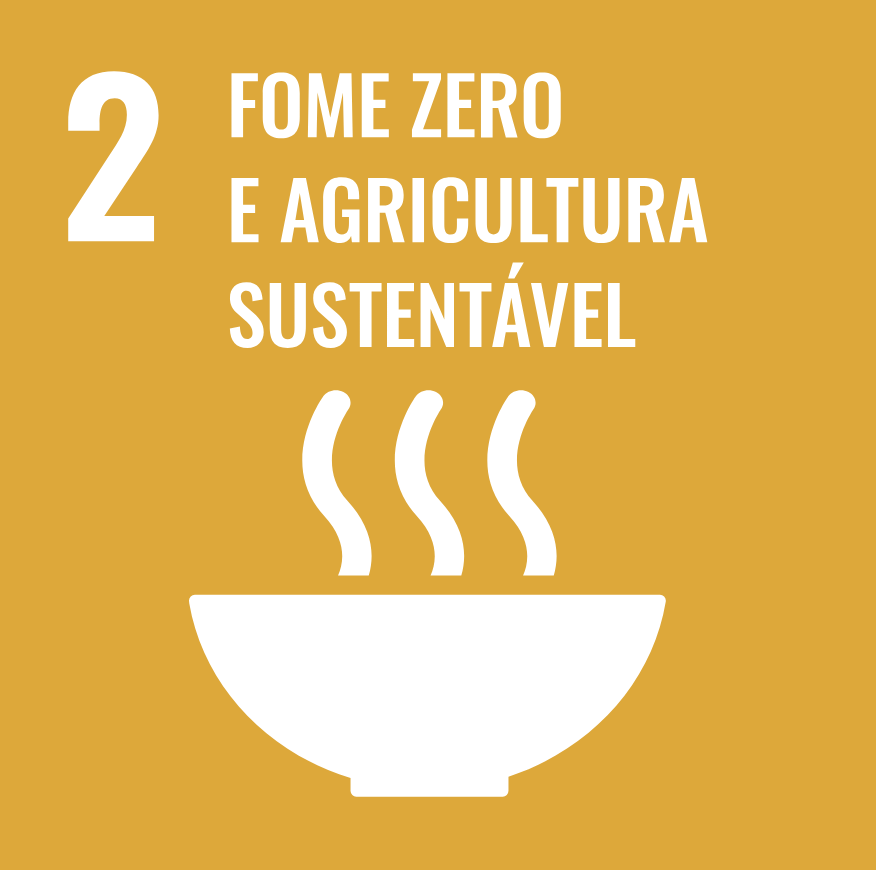

Fome Zero e Agricultura Sustentável

Erradicar a fome, alcançar a segurança alimentar, melhorar a nutrição e promover a agricultura sustentável.
Problema:
Como podemos garantir a produção sustentável de alimentos para atender à crescente demanda global, sem comprometer os recursos naturais e o meio ambiente, e ao mesmo tempo reduzir a fome e a desnutrição no Brasil?
Soluções Existentes:
A implementação de um sistema de monitoramento agrícola integrado, utilizando sensores e inteligência artificial, permitirá a coleta e análise de dados em tempo real sobre as condições do solo, clima, saúde das plantas e necessidades das culturas. Isso possibilitará a otimização da aplicação de água, fertilizantes e pesticidas, reduzindo o desperdício de recursos e minimizando o impacto ambiental da produção agrícola.
Objetivo:
Desenvolver e implementar um modelo de produção agrícola sustentável no Brasil, que utilize práticas agrícolas inovadoras, tecnologias de monitoramento agrícola integrado, sensores e inteligência artificial para aumentar a produtividade, reduzir o desperdício de alimentos, garantir o acesso à alimentação nutritiva e otimizar o uso de recursos hídricos, fertilizantes e pesticidas.